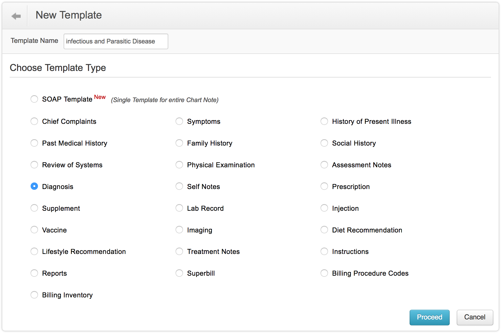
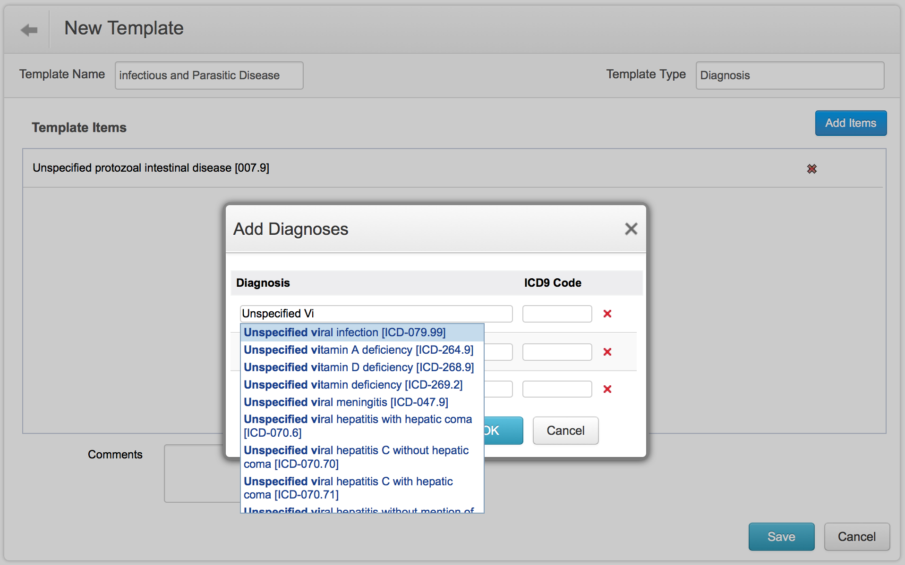

Create Templates
Templates helps you to quickly document patient visits. It saves time by minimizing the time involved in generating the patient summary and thus you can focus more on the patient care than working with the software.
- Go to Settings > Templates > ChARM Library and go through the default templates provided by ChARM EHR.
- If an existing template match your requirement, you can import them by clicking the "Import" option present against the template. Once the template is imported, you can also modify the template to suit your practice needs.
- You can also create new templates by clicking on the '"New Template" link.
- To create a new template, click on the "New Template" link.
- Enter the "Template Name" and choose the "Template Type" (e.g., Diagnosis Template). Click on "Proceed".

- Add the template entries by clickinAdd template Entries andg on "Add Item" button. Add the diagnoses codes and click "OK".
- Once all the template items are added, click on the "Save" button to save the template.

- When the template is created, it is placed under "My Templates" by default. "My Templates" are accessible only for you.
- You can also share your template with your practice so that other members in your practice will get benefitted. You can do this by clicking on "Share" and by choosing "Share to Practice" option. You can also share the template with the ChARM EHR community by sharing it to the ChARM Library.